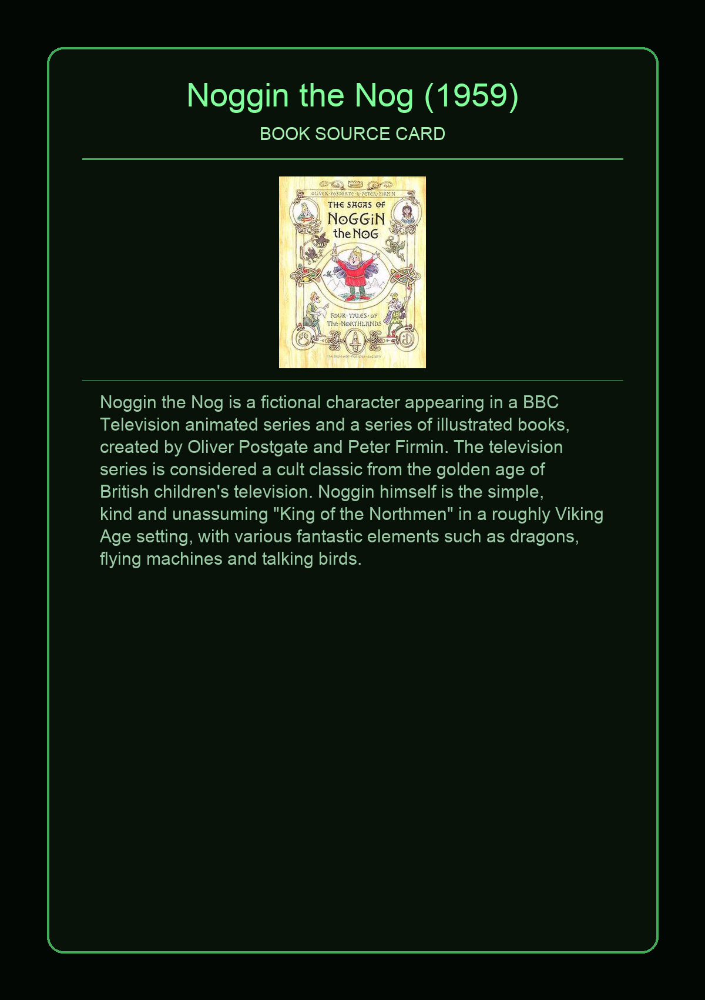
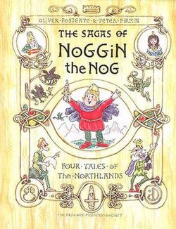

Noggin the Nog is a fictional character appearing in a BBC Television animated series and a series of illustrated books, created by Oliver Postgate and Peter Firmin. The television series is considered a cult classic from the golden age of British children's television. Noggin himself is the simple, kind and unassuming "King of the Northmen" in a roughly Viking Age setting, with various fantastic elements such as dragons, flying machines and talking birds.
This page aggregates references to the source material behind Name Lore entries.